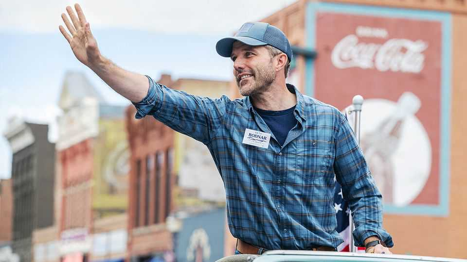
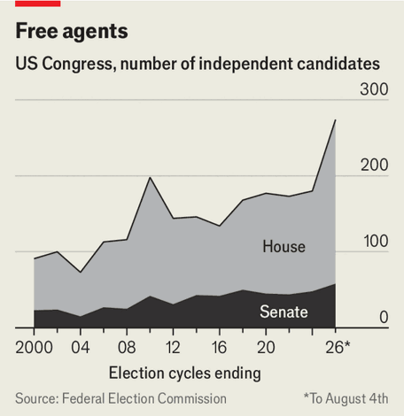
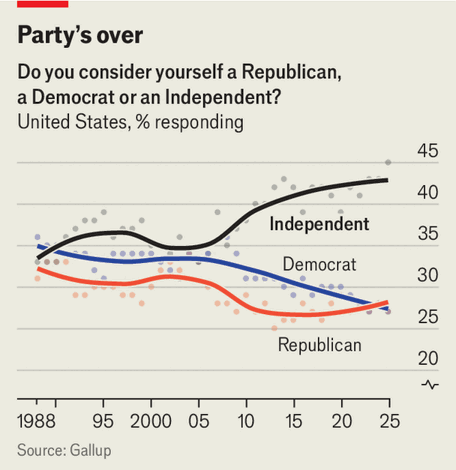

Americans are sick of Republicans and Democrats. Can independents win?
Senate campaigns in Montana and Nebraska offer a test

Aug 6th 2026
BIAS BREWING in Kalispell, Montana, may seem an oddly named place for a self-described “radical pragmatist” to hold a campaign event. Yet on a recent evening in July, Seth Bodnar chose the brewery to make his campaign pitch. “Running as an independent, you upset people on both sides,” he told the crowd. Mr Bodnar (pictured) wants to be Montana’s next senator. He believes Democrats ignore the state and Republicans take it for granted.
Mr Bodnar’s campaign is part of a trend. Voters are dissatisfied with America’s two main political parties. Net favourability for the Democrats, in particular, is near a 35-year low. That has created an opening for politicians on the far left (see next story), but it is also inspiring a new generation of independents. More congressional candidates have filed to run as independents in 2026 than in any election cycle since at least 2000. The campaigns of Mr Bodnar and Dan Osborn, a candidate in Nebraska, are this year’s best test of whether independents can succeed.

Running as an independent is sufficiently difficult that, at least historically, few politicians have deemed it wise to do so. Independents lack the campaign infrastructure of a party and, in many states, must collect more signatures to earn a place on a ballot. However, aspiring politicians now face a shifting set of odds.
Last year 45% of Americans identified as independent, the highest share since at least 1988, according to Gallup. Those independents are, in turn, five percentage points more likely to lean Democratic than Republican. In Republican states, where Democratic policies are often more popular than the party itself, an independent may have a better chance of winning. It is no coincidence that two of this year’s strongest independent candidates are campaigning in Montana and Nebraska, where voters have thrice voted for Donald Trump but where farmers are also pinched by tariffs and fuel costs.

In Montana, Mr Bodnar has an institutionalist’s pedigree: he graduated from West Point, was twice deployed to Iraq and worked at General Electric before serving as president of the University of Montana in Missoula. “I feel like both parties left me in what I call the sensible centre,” he explains over coffee in Missoula. He faces Kurt Alme, a former US attorney backed by Mr Trump and Steve Daines, the retiring senator who now holds the seat. Mr Daines waited until the last moment to announce his retirement, in effect ensuring that only his preferred candidate was prepared to run.
Mr Osborn, in contrast, is a populist firebrand. A 51-year-old veteran, mechanic and former union leader, he got his political start in 2024, when Democrats failed to field a Senate candidate. Mr Osborn ran as an independent and lost to Republican Deb Fischer, but won an impressive 47% of the vote. His opponent this time is the Republican incumbent Pete Ricketts, a wealthy former governor whose father founded TD Ameritrade, a financial firm.
Critics argue that neither Mr Bodnar nor Mr Osborn are true independents, but Democrats seeking to escape the party’s noxious brand. Indeed both men rely on Act Blue, a Democratic fundraising platform, and enjoy the support of prominent Democrats. Mr Osborn, in particular, echoes the anti-billionaire sentiment of today’s left. “Elon Musk can give a campaign $300m and he’s got keys to the White House,” he recently told a crowd in Sidney, Nebraska. “Man, that’s not right.”
Mr Bodnar insists that his independence is a product of his military career, which fostered non-partisanship, and claims he has identified as an independent for more than a decade. “We believe strongly that the government has no place in our doctor’s office, no place in our bedrooms, no place in our gun cabinets.” Mr Osborn critiques the Democrats’ past standard-bearers. “I’m not afraid to say that Joe Biden failed us on the border. I’m not afraid to say Obama shouldn’t have bailed the banks out,” he says.
Victory for independents depends on their ability to convince enough Republican voters to give them a chance. As important, it depends on Democrats’ decision to drop out or remain in the race and risk splitting the vote. The winner of Nebraska’s Democratic primary has filed paperwork to withdraw, but a loser of that primary is suing to force the party to compete.
In Montana the Democratic nominee is Alani Bankhead, whose campaign is nearly broke. “When I was a senator,” says Max Baucus, a former Democratic senator in the state, “I raised millions of dollars for Democrats in Montana.” He is now supporting Mr Bodnar. The deadline for Ms Bankhead to withdraw is August 10th. Mr Baucus is still hoping she drops out. “For Seth to win”, he says, “she has to.” ■
Stay on top of American politics with The US in brief, our daily newsletter with fast analysis of the most important political news, and Checks and Balance, a weekly note that examines the state of American democracy and the issues that matter to voters.